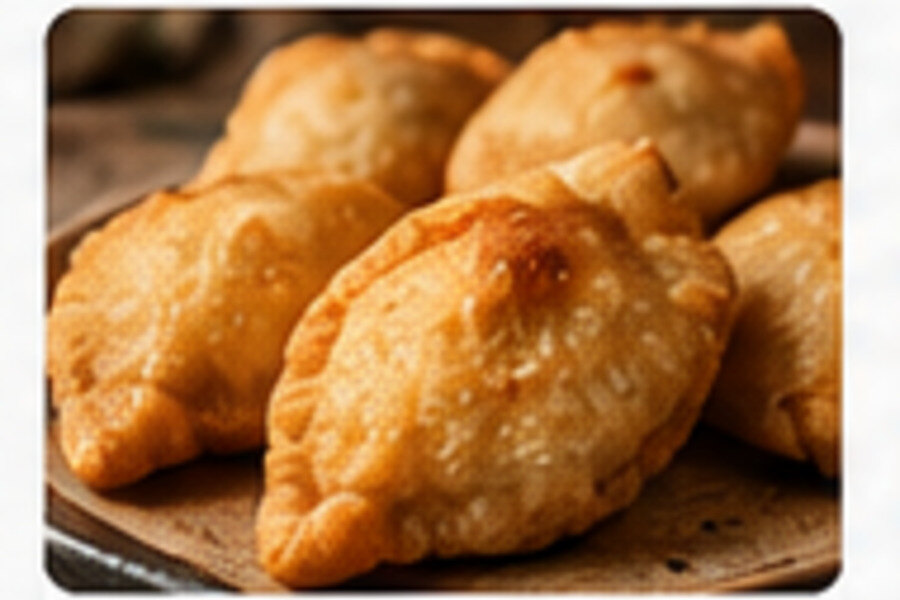
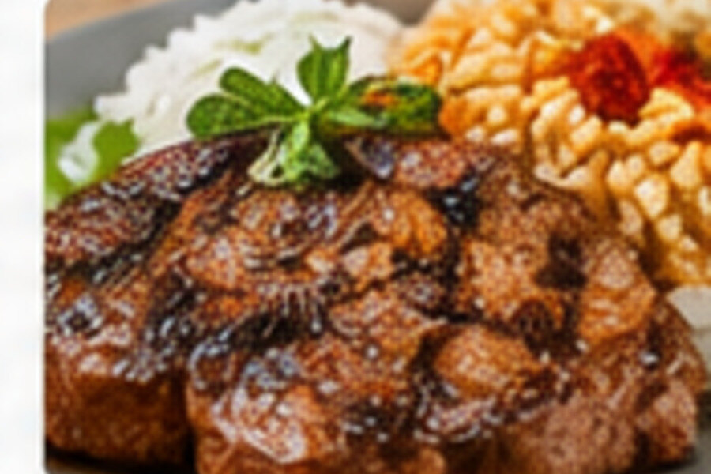
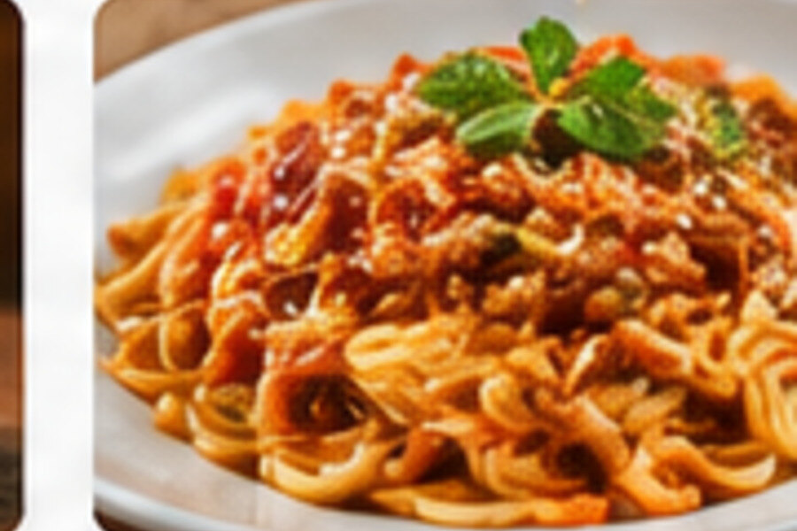

A restaurant identity built around food, hospitality and memorable moments.
La Plaza del Domplin is being developed as a modern restaurant with a strong visual identity and an organized customer experience.
Official history, ownership, location details and verified restaurant information can be added once confirmed.



Core principles for the future restaurant experience.